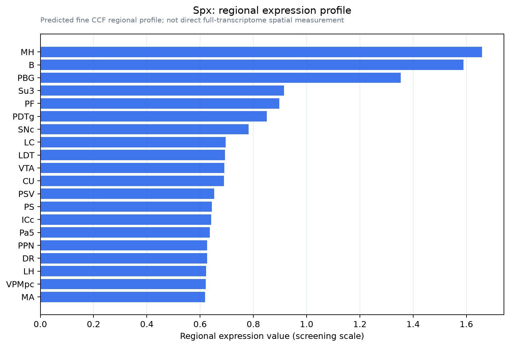

Spx
Spatial tier: STRICT_EXCLUSIVE · Class: OTHER · Top region: MH (Medial habenula) · Positive regions: 8/554
43.5Discovery Score
39.4Targetability Score
CEvidence grade C
What this means: Spx: predicted fine-region profile is strict-exclusive, with 8 positive regions out of 554 (limit 12); direct spatial validation is required.
Function in MH: evidence, prediction, innovation
- Gene function
- Spx encodes spexin (NPQ/C12orf39), a secreted 14-amino-acid galanin/kisspeptin-superfamily neuropeptide. It agonizes Gi/o-coupled GALR2 and GALR3, not GALR1, lowering cAMP and dampening firing. Spexin is linked to satiety, nociception, anxiety and mood.
- Region function
- Medial habenula carries septal and limbic input via the fasciculus retroflexus to the interpeduncular nucleus, controlling fear/anxiety, nicotine aversion/withdrawal, mood and exercise motivation.
- Published in this region
- expression only Yun et al. 2019 mapped SPX mRNA (ISH/qRT-PCR): enriched in medial habenula and suprachiasmatic nucleus; GALR2 high in habenula, hypothalamus, ventral midbrain, dorsal raphe; their GALR2 agonist SG2A was anxiolytic and antidepressant i.c.v., not MHb-targeted. Zebrafish dorsal habenula expresses spx1; Jeong et al. 2019: dHb spexin-1 overexpression reduces anxiety-like behaviour; Kim et al. 2019 mapped the spx1 dHb-interpeduncular circuit.
- Predicted function
- Prediction: spexin is an MHb co-transmitter (likely cholinergic/substance P cells) acting on GALR2/3 in the interpeduncular nucleus or locally, slow inhibitory feedback setting habenular excitability during stress and aversion. Conditional MHb Spx deletion should raise anxiety and MHb-IPN drive; MHb-targeted spexin or SG2A should be anxiolytic and blunt nicotine withdrawal, as in zebrafish.
- Innovation
- ★★★★☆ 4/5 Mouse MHb spexin rests on one pharmacology paper and has never been manipulated there, while habenular tools are mature.
- Tools
- No Spx-Cre line; spexin peptide, the GALR2-selective spexin analogue SG2A, GALR2/GALR3 ligands and mouse-validated anti-spexin antibodies. MHb access via Tac1-Cre, Tac2-Cre or Chat-Cre.
- References
Direct evidence located at the region
No Allen ISH section could be located at this region's centroid for the recorded experiments.
Look it up yourself: Allen Mouse Brain ISH for SpxAllen reference atlas: MH (structure 483)ABC Atlas MERFISH viewer(in the ABC Atlas choose dataset MERFISH-C57BL6J-638850-CCF, colour cells by gene "Spx" or by parcellation_substructure "MH")All genes confined to MH + 3-D brain
Direct spatial evidence
MERFISH REGION LOCATOR

Regional expression figure

Predicted WMB × fine-CCF profile; not direct full-transcriptome spatial measurement.
Spatial profile
Evidence and specificity
- Evidence status
- PREDICTED_FINE
- Direct sources
- None; predicted localization only
- Exclusive threshold
- 12 positive regions out of 554
- Spatial specificity
- 0.328
- Top-region fraction
- 0.087
- Filter status
- PASS
Interpretation limits
- Cell-type-to-region projection is imputed expression, not direct spatial measurement.
- Adult reference atlases do not establish stability across age, sex, strain, state, or disease.
- Transcript abundance does not guarantee protein abundance or genetic-tool performance.